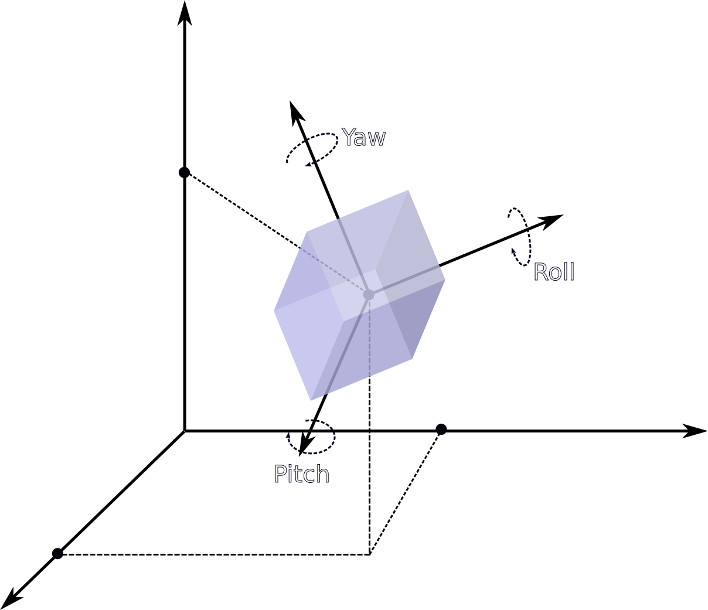
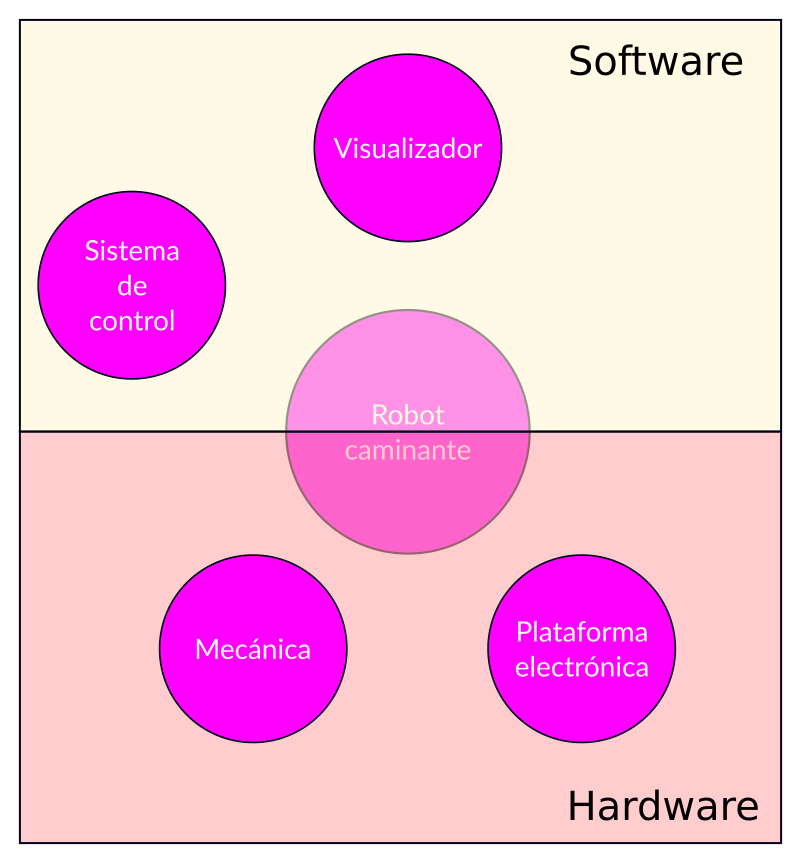

Sistema de control
distribuido para
maquinas caminantes
Joaquin de Andres y Martinez de Arenasaa, Dr. Ing. Ignacio Masa y Dr. Ing. Mauricio Anigsteinb
| a Laboratorio de Control, Dpto de Electronica, Facultad de Ingenieria, Universidad de Buenos Aires; | b Laboratorio de Robotica, Dpto de Mecánica, Facultad de Ingenieria, Universidad de Buenos Aires;
Presentacion del estudio
Presentacion del estudio


Grados de libertad


Criterio de Grübler-Kutzbach
\[\begin{aligned} F & = \lambda(n-j-1)+\sum^{j}_{i=1}f_i \end{aligned} \]
\[\begin{aligned} F & : \text{Grados de libertad del mecanismo} \\ \lambda & : \text{Grados de libertad del espacio de trabajo} \\ n & : \text{Numero de vínculos} \\ j & : \text{Numero de articulaciones} \\ f_i & : \text{Libertades de cada articulacion} \end{aligned} \]
Tres miembros con dos grados de libertad
\[\begin{aligned} F & = 6(8 - 9 - 1) + \sum^{6}_{i=1}1 + \sum^{3}_{i=1}3 = 3 \end{aligned} \]
\[\begin{aligned} F & : \text{Grados de libertad del mecanismo} \\ \lambda & : 6 \\ n & : 2 \text{ vinculos } * 3 \text{ miembros } + 2 \text{ vinculos base } = 8 \\ j & : 9 (j_1= 6 \text{ articulaciones 1gdl; } j_3= 3 \text{ articulaciones 3gdl}) \\ f_i & : 1 \text{ para } j_1 \text{ y } 3 \text{ para } j_3 \end{aligned} \]
Cuatro miembros con dos grados de libertad
\[\begin{aligned} F & = 6(10 - 12 - 1) + \sum^{8}_{i=1}1 + \sum^{4}_{i=1}3 = 2 \end{aligned} \]
\[\begin{aligned} F & : \text{Grados de libertad del mecanismo} \\ \lambda & : 6 \\ n & : 2 \text{ vinculos } * 4 \text{ miembros } + 2 \text{ vinculos base } = 10 \\ j & : 12 (j_1= 8 \text{ articulaciones 1gdl; } j_3= 4 \text{ articulaciones 3gdl }) \\ f_i & : 1 \text{ para } j_1 \text{ y } 3 \text{ para } j_3 \end{aligned} \]
Tres miembros con tres grados de libertad
\[\begin{aligned} F & = 6(11 - 12 - 1) + \sum^{9}_{i=1}1 + \sum^{3}_{i=1}3 = 6 \end{aligned} \]
\[\begin{aligned} F & : \text{Grados de libertad del mecanismo} \\ \lambda & : 6 \\ n & : 3 \text{ vinculos } * 3 \text{ miembros } + 2 \text{ vinculos base } = 11 \\ j & : 12 (j_1= 9 \text{ articulaciones 1gdl; } j_3= 3 \text{ articulaciones 3gdl}) \\ f_i & : 1 \text{ para } j_1 \text{ y } 3 \text{ para } j_3 \end{aligned} \]
K miembros con dos grados de libertad
\[\begin{aligned} F & = 6(3k + 2 - 4k - 1) + \sum^{3k}_{i=1}1 + \sum^{k}_{i=1}3 = 6 \end{aligned} \]
\[\begin{aligned} F & : \text{Grados de libertad del mecanismo} \\ \lambda & : 6 \\ n & : 3 \text{ vinculos } * k \text{ miembros } + 2 \text{ vinculos base } = 3k + 2 \\ j & : 4k (j_1= 3k \text{ articulaciones 1gdl; } j_3= k \text{ articulaciones 3gdl }) \\ f_i & : 1 \text{ para } j_1 \text{ y } 3 \text{ para } j_3 \end{aligned} \]
Modos de caminar
Estabilidad
Generacion de trayectorias
Cinematica del robot
Realizacion practica
Realizacion practica


